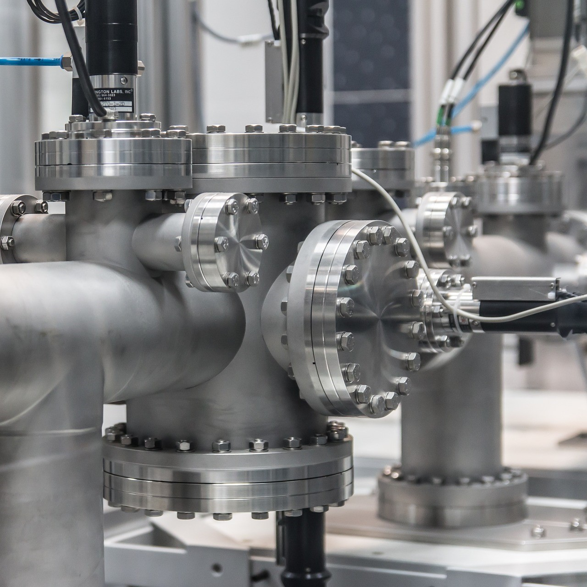
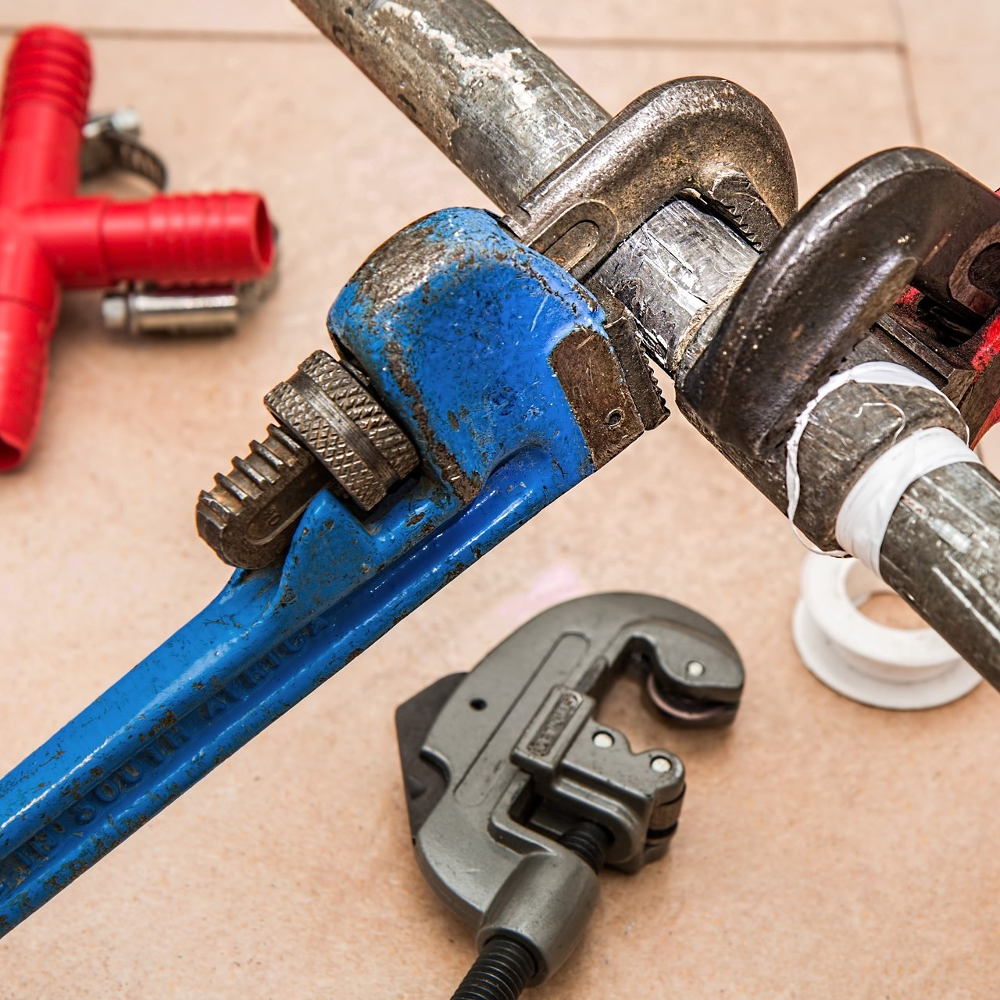

Szolgáltatásaink

Vízvezeték szerelés.

Csatorna/közmű építés, esővíz elvezetés és szikkasztó rendszerek.
Köszponti fűtés szerelés: kazánházak, felületfűtések padló/ fal/ mennyezetfűtés.

Gázvezeték szerelés

Légtechnikai szellőzés és légkezelő rendszerek kivitelezése.

Klímaszerelés, vizes és gázos hűtőberendezések telepítése különböző beltériegységek szerelése.
Napkollektoros és hőszívattyús rendszerek szerelése
